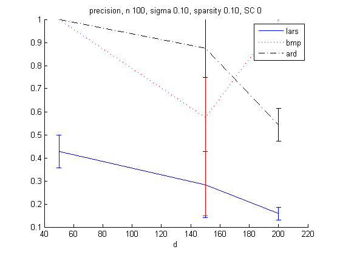
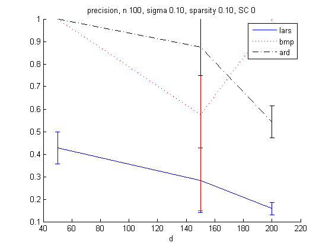

Variable Selection Demo
PMTKslow
function varSelDemo() methods = {... @(X,y) larsSelectSubsetCV(X,y, 'nfolds', 5), ... @(X,y) fbmpCore(X,y,'maxNumSearches',5), ... @(X,y) ARDwipf(X,y,'maxIter',50)}; methodNames = {'lars', 'bmp', 'ard'}; nmethods = length(methodNames); n = 100; ds = [50 150 200]; % 10:50:500; sigma = 0.1; sparsity = 0.1; lassoSignConsistent = false; % faster to generate data if not require sign consistency ntrials = 2; nexpts = length(ds); nmetrics = 4; metrics = zeros(ntrials, nexpts, nmetrics, nmethods); metricNames = {'NMSE', 'time', 'precision', 'recall'}; for expt=1:nexpts d = ds(expt); fprintf('expt %d (d=%d) of %d\n', expt, d, nexpts); for m=1:nmethods fprintf('method %d (%s) of %d\n', m, methodNames{m}, nmethods); r = floor(sparsity*d); metrics(:,expt,:,m) = helper(methods{m}, n,d,r,lassoSignConsistent,sigma,ntrials); end end for k=1:nmetrics str = sprintf('%s, n %d, sigma %3.2f, sparsity %3.2f, SC %d', ... metricNames{k}, n, sigma, sparsity, lassoSignConsistent); figure; hold on [styles, colors, symbols] = plotColors; for m=1:nmethods mu = mean(metrics(:,:,k,m)); se = std(metrics(:,:,k,m))/sqrt(ntrials); h(m) = errorbar(ds, mu, se, [styles{m}, colors(m)]); %set(h(m), 'color', colors(m)); end legend(methodNames) title(str) xlabel('d') end end function [metrics] = helper(fn, n,d,r,lassoSignConsistent,sigma,ntrials) for t=1:ntrials setSeed(t); [X,y,Wtrue] = bolassoMakeData(n,d,r,1,lassoSignConsistent,sigma); %X = centerCols(X); %X = mkUnitVariance(X); %y = centerCols(y); trueSupport = find(Wtrue ~= 0); % 1 to r start = cputime; [estSupport,West] = fn(X,y); time(t) = cputime-start; ncorrect = length(intersect(estSupport, trueSupport)); ncalled = length(estSupport); ntrue = length(trueSupport); precision(t) = ncorrect/ncalled; recall(t) = ncorrect/ntrue; nmse(t) = norm(West-Wtrue)/norm(Wtrue); end metrics = [nmse(:) time(:) precision(:) recall(:)]; end
expt 1 (d=50) of 3 method 1 (lars) of 3 method 2 (bmp) of 3 method 3 (ard) of 3 expt 2 (d=150) of 3 method 1 (lars) of 3 method 2 (bmp) of 3 method 3 (ard) of 3 expt 3 (d=200) of 3 method 1 (lars) of 3 method 2 (bmp) of 3 method 3 (ard) of 3

 
